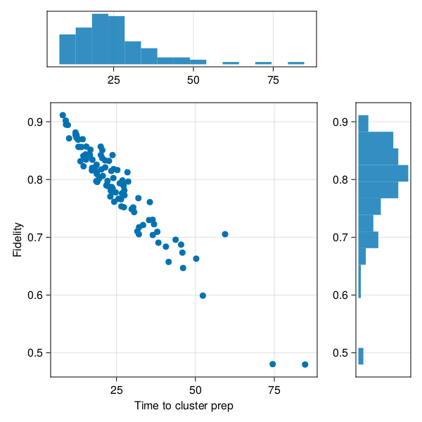

Cluster State on Color Centers
Cluster states are highly entangled state of qubits useful as a computational resource. The cluster state is also a graph state where the graph has a 2D grid topology.
One interesting hardware implementation involves entangling a large number of color centers[1].
We will build a simulator for such a piece of hardware. Each node will be a register of one electron spin for networking and one nuclear spin in which the actual long-term entanglement is "stored".
This is a very low-level implementation. You would be better of using already implemented reusable protocols like EntanglerProt, and a ready-made noisy entangled state from StatesZoo such as BarrettKokBellPair. On the other hand, the setup here is a simple way to learn about making discrete event simulations without depending on a lot of extra library functionality and opaque black boxes.
The visualization below shows an example of the state being generated, together with tracking the state of various locks and other metadata that needs to be tracked.
Of interest is both the time it takes to prepare a full cluster state, as well as the fidelity of state being prepared in that fashion. The fidelity can be lowered due to the numerous noise processes experience by the hardware. The duration can be quite long due to the low efficiencies of photon capture during typical entanglement procedures. The plot below shows the distribution of these figures of merit, sampled from a large number of independent runs of the simulation (gathering the entirety of this date takes less than a second).

For organizing the simulation and simplifying the digital and analog quantum dynamics, we will use the star of QuantumSavory.jl, namely the Register data structure. For a convenient data structure to track per-node metadata in a graph (network) we will use the RegisterNet structure.
Moreover, behind the scenes QuantumSavory.jl will use:
ConcurrentSim.jlfor discrete event scheduling and simulation;Makie.jltogether with our custom plotting recipes for visualizations;QuantumOptics.jlfor low-level quantum states.
The user does not need to know much about these libraries, but if they wish, it is easy for them to peek behind the scenes and customize their use.
Below we embed a live version of the simulation (hosted at areweentangledyet.com/colorcentermodularcluster/):
The source code is in the examples/colorcentermodularcluster folder. All of the base functionality lives in setup.jl, while the three numbered scripts run it in different circumstances:
1_time_to_connected.jl— runs many independent instances and gathers statistics on the time-to-completion and fidelity;2_real_time_visualization.jl— runs a single instance with a detailed live dashboard (the video at the top of this page);3_makie_interactive.jl— wraps both of the above into an interactive web app.
Network Setup
Each node of the cluster is a Register holding two qubits: an electron spin used for networking, and a nuclear spin used as long-term memory. The two spins decay at different rates, so each is given its own T2Dephasing background process. The nodes are laid out on a 2×3 grid.
graph = grid([2,3])traits = [Qubit(), Qubit()] # electron spin and nuclear spinbg = [T2Dephasing(root_conf[:T₂ᵉ]), T2Dephasing(root_conf[:T₂ⁿ])]net = RegisterNet(graph, [Register(traits, bg) for i in vertices(graph)])The various hardware parameters (spin lifetimes, optical efficiencies, hyperfine coupling, etc.) are collected in a root_conf dictionary, with literature references attached as comments. derive_conf turns these physical parameters into the derived quantities the simulation actually needs — most importantly the per-attempt entanglement success probability Pˢᵘᶜᶜ (and the geometric distribution 𝒟ˢᵘᶜᶜ for the number of attempts before a success), and the noisy Barrett-Kok Bell state ψᴮᴷ:
ηᵗᵒᵗᵃˡ = ηᵒᵖᵗ * ξᴼᴮ * Fᵖᵘʳᶜ / (Fᵖᵘʳᶜ-1+(ξᴰᵂ*ξᴱ)^-1)Pˢᵘᶜᶜ = 0.5 * ηᵗᵒᵗᵃˡ^2𝒟ˢᵘᶜᶜ = Geometric(Pˢᵘᶜᶜ)ψᴮᴷ = SProjector((Z₁⊗Z₁ + Z₂⊗Z₂) / √2)dep(p,o) = p*o + (1-p)*MixedState(o)ψᴮᴷ = dep(root_conf[:Fᵉⁿᵗ], ψᴮᴷ) # mix in some white noise to model imperfect entanglementNote that this noisy Bell state is built here by hand from a simple depolarizing model, rather than using a ready-made parametrized state like BarrettKokBellPair from StatesZoo.
Entangling Neighbors
The heart of the simulation is the barrettkok process, a @resumable function that models a single Barrett-Kok entanglement attempt between two neighboring nodes.
One instance of barrettkok runs on every edge of the network:
for (;src,dst) in edges(net) @process barrettkok(sim, net, src, dst, conf)endReserving the hardware. First it makes sure no other process is already working on this edge, then reserves the electron spins of both nodes with a nongreedymultilock (a multi-resource lock that avoids deadlock by never holding a partial set of locks):
link_resource = net[(nodea, nodeb), :link_queue]islocked(link_resource) && returnespin_slots = [net[nodea, 1], net[nodeb, 1]]@yield request(link_resource)@yield @process nongreedymultilock(env, espin_slots)Waiting for a photon. Rather than simulating each individual optical attempt, we sample the number of attempts needed for the first success from the geometric distribution computed earlier, and convert that into a waiting time:
attempts = 1 + rand(conf[:𝒟ˢᵘᶜᶜ])duration = attempts * conf[:τᵉⁿᵗ]@yield timeout(env, duration)bk_el_init(env, rega, regb, conf) # write the noisy Bell pair into the two electron spinsbk_el_init initializes the two electron spins into the noisy Bell state ψᴮᴷ and applies a Hadamard.
Swapping into nuclear memory. The electron spins are only used for networking; the entanglement must be moved into the long-lived nuclear spins so that the electron can be reused for the next link. After reserving the nuclear spins, each node performs a local CPHASE between its electron and nuclear spin, followed by a projective measurement of the electron:
function bk_swap(env, reg, conf) if !isassigned(reg, 2) initialize!(reg[2]; time=now(env)) apply!(reg[2], H) end apply!([reg[1],reg[2]], CPHASE; time=now(env)) off = project_traceout!(reg[1], σˣ) if rand() > conf[:Fᵐᵉᵃˢ] # model measurement infidelity by flipping the outcome off = -off end return offendClassical correction. The two measurement outcomes determine whether a Z correction has to be applied on the partner's nuclear spin. In a more complete implementation this would be tracked in a Pauli frame rather than applied to the state directly:
r1 = bk_swap(env, rega, conf)r2 = bk_swap(env, regb, conf)r1 == -1 && apply!(regb[2], Z)r2 == -1 && apply!(rega[2], Z)net[(nodea, nodeb), :link_register] = true # record successrelease.(nspin_slots); release.(espin_slots); release(link_resource)Once link_register is set to true on every edge, the full 2×3 cluster state has been prepared.
Figures of Merit
A cluster state is a graph state, so it is fully characterized by a set of stabilizers — one per vertex, of the form $X_v \prod_{w \sim v} Z_w$ over each vertex and its neighbors. We pre-build these stabilizer observables for every possible neighborhood size:
observables = [reduce(⊗, [σˣ, fill(σᶻ,n)...]) for n in 1:5]The expectation value of the stabilizer attached to a vertex is a convenient per-node fidelity proxy: it is 1 for a perfect cluster state and degrades as the nuclear spins dephase. We compute it for each vertex by selecting the observable matching that vertex's degree and evaluating it over the vertex and its neighbors:
fid = map(vertices(net)) do v neighs = neighbors(net, v) obs = observables[length(neighs)] regs = [net[i, 2] for i in [v, neighs...]] # the nuclear spins real(observable(regs, obs; time=now(sim)))endRunning the Simulation
The first script, 1_time_to_connected.jl, runs the simulation forward one discrete event at a time until every edge has been entangled, then reports the elapsed simulated time and the mean stabilizer expectation:
function run_until_connected(root_conf) net, sim, observables, conf = prep_sim(root_conf) while !all([net[v,:link_register] for v in edges(net)]) ConcurrentSim.step(sim) end fid = map(vertices(net)) do v neighs = neighbors(net, v) obs = observables[length(neighs)] regs = [net[i, 2] for i in [v, neighs...]] real(observable(regs, obs; time=now(sim))) end now(sim), mean(fid)endBecause each instance is independent, we can sample many of them in parallel and plot the joint distribution of completion time versus fidelity — this is the scatter-and-histogram figure shown near the top of the page:
r = tmap((_)->run_until_connected(root_conf), 1:100)df = rename(DataFrame(r), [:time, :fid])Figures of Merit and Visualizations
The second script, 2_real_time_visualization.jl, advances a single instance with run(sim, t) and records the dashboard video shown at the top of this page. It combines three of QuantumSavory's plotting recipes:
registernetplot_axisdraws the registers and their quantum states on the grid;resourceplot_axistracks the locks and queues (:link_queue,:decay_queue) and the:link_registerflags;- a hand-made overlay of
linesegments!colors each cluster edge by its current stabilizer expectation, alongside a stairs plot of the best/worst/average node fidelity over time.
step_ts = range(0, tscale, step=tscale/500)record(F, "colorcentermodularcluster-02.simdashboard.mp4", step_ts; framerate=10) do t run(sim, t) # recompute per-node fidelities and notify the observables driving the plots ...endTo learn more about how to visualize these data structures as the simulation proceeds, consult the Visualizations page.
The third script, 3_makie_interactive.jl, wraps both the statistics gathering and the live dashboard into a single interactive web app (built with WGLMakie and Bonito), with sliders to vary the hardware parameters in real time. This is what is embedded in the live example above.
Summary of QuantumSavory tools employed in the simulation
We used the Register and RegisterNet data structures to track both the quantum states and the classical per-node/per-edge metadata of our mixed analog-digital dynamics.
Much of the analog dynamics was implicit through the use of backgrounds, declaring the noise properties of the electron and nuclear spins.
The discrete-event protocol itself was written by hand as a @resumable function scheduled on the ConcurrentSim.jl event loop, using
nongreedymultilockandResourcelocks for coordinating access to shared hardwareinitialize!andapply!for state preparation and gatesproject_traceout!for the projective electron measurementsobservablefor evaluating the cluster-state stabilizers
Many of the above functions take the time keyword argument, which ensures that various background analog processes are simulated before the given operation is performed.
Of note is that we also used Makie.jl for plotting and ConcurrentSim.jl for discrete event scheduling, many of them under the hood without being invoked directly.